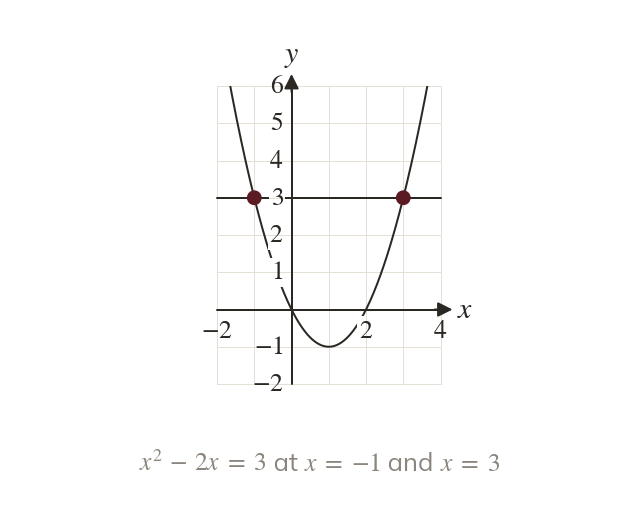
A horizontal line meets the curve
The solutions of are where meets Only the x-coordinates are needed.
Some equations, such as or are slow to solve by algebra. A drawn graph answers them by reading where two graphs meet.
Work down the page at your own pace. Write every answer in your book first, then click to check it.
Read each card, then follow the worked examples one step at a time.

The solutions of are where meets Only the x-coordinates are needed.
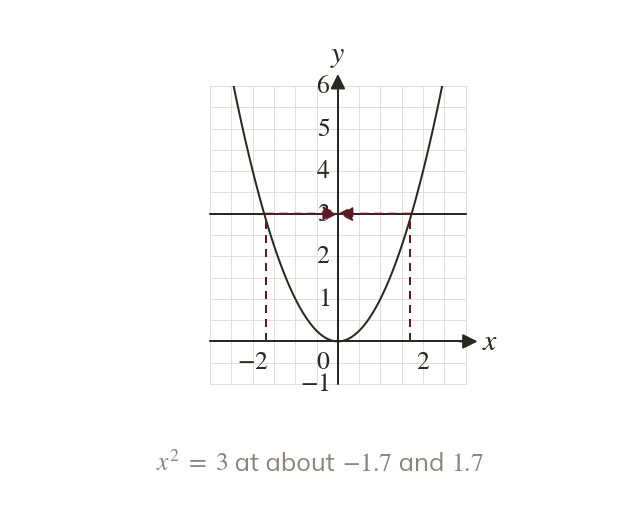
Each crossing gives one solution, read on the x-axis. Between grid lines the answer is an estimate.
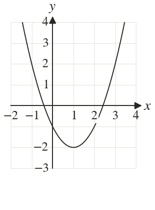
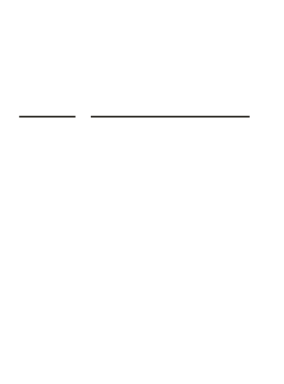
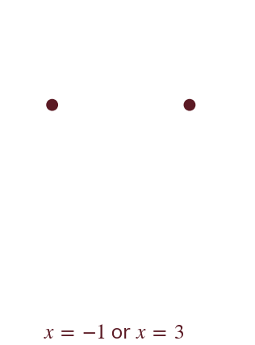
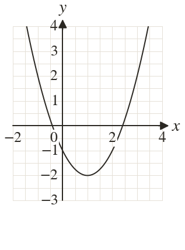
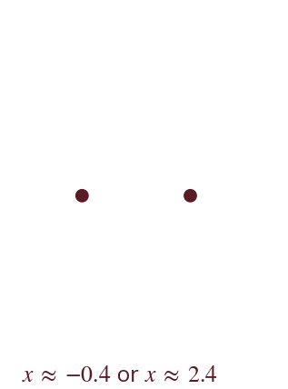
Pick an answer. If it's wrong, the feedback tells you which mistake it was.
Printable worksheet — the questions with room to work.
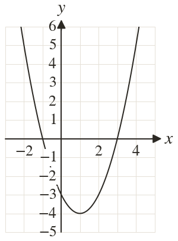
Read each card, then follow the worked examples one step at a time.
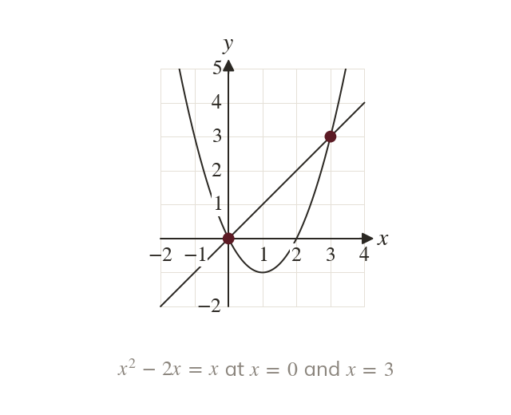
Where and cross, both give the same So those values solve
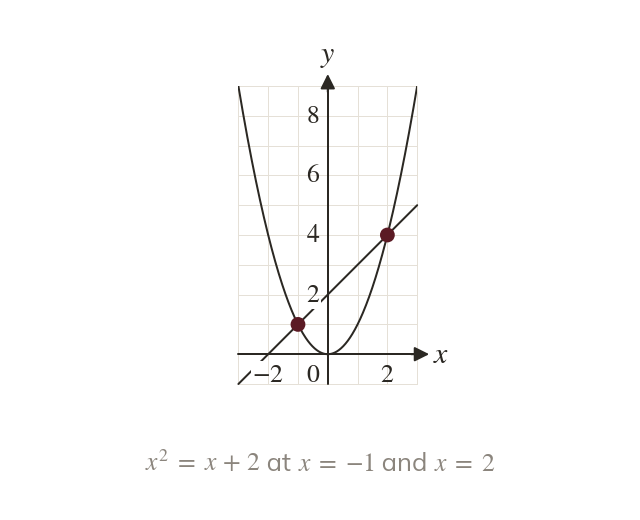
A linear right-hand side is drawn as a straight line. Its crossings with the curve give the solutions.
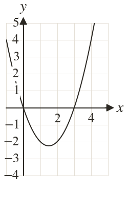
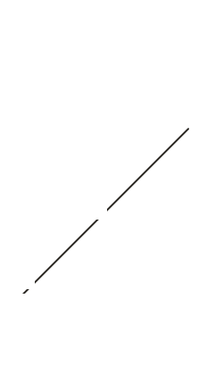
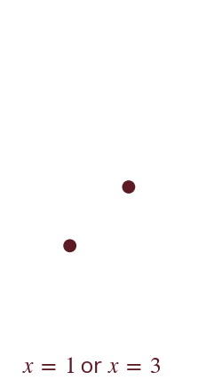
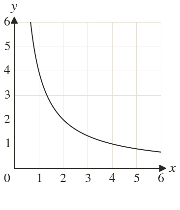
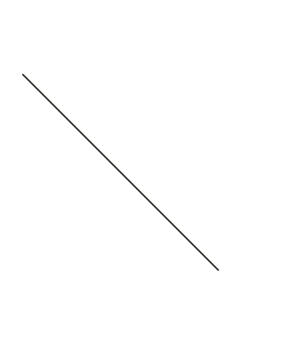
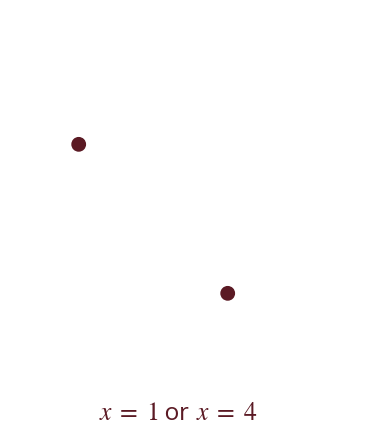
Pick an answer. If it's wrong, the feedback tells you which mistake it was.
Printable worksheet — the questions with room to work.
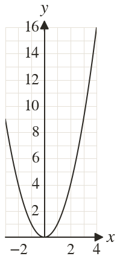
Finished? Next lesson: 10H.15.9 Rearranging Equations to Solve Graphically.
Log in, then search for a code to practise that skill.
Videos, worksheets and more on each part of this lesson.